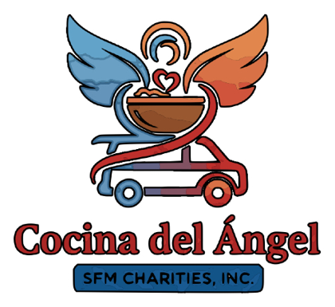
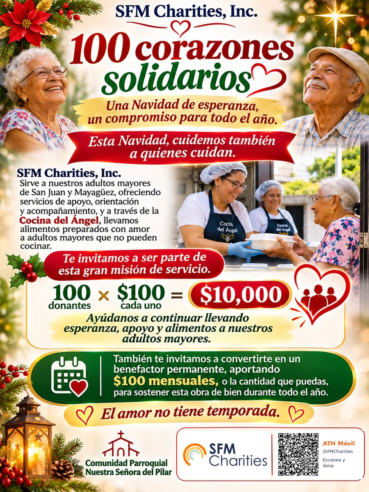

Para seguir ayudando a que nuestros adultos mayores tengan alimento y compañía. Esta Navidad, cuidemos también a quienes cuidan: buscamos 100 personas o familias que aporten $100 para sostener al equipo que cocina, lleva los platos y acompaña a cada adulto mayor, y 100 corazones que sigan con nosotros todo el año.
Elige la forma que te sea más fácil. Luego inscríbete abajo para que podamos darte las gracias, enviarte tu recibo y acompañarte.
Escanea el código con tu app de ATH Móvil o busca /SFMCharities. Escribe "100 Corazones" en el mensaje.
Abrir ATH MóvilLa mejor opción para tu aporte mensual: el retiro se repite solo y te llega el recibo.
A nombre de SFM Charities, por correo a PO Box 21358, San Juan, PR 00928-1358. Ver instrucciones.
Entrega tu tarjeta de compromiso o tu cheque a los representantes de SFM Charities.

SFM Charities, Inc. tiene la misión de acompañar, proteger y servir a nuestros adultos mayores, especialmente a aquellos que enfrentan situaciones de pobreza, soledad, enfermedad y vulnerabilidad.
A través de nuestros programas en San Juan y Mayagüez ofrecemos servicios legales y de trabajo social. Mediante la Cocina del Ángel, llevamos alimentos preparados con amor a adultos mayores que, por sus condiciones o limitaciones, no pueden preparar sus propios alimentos.
Sabemos que no todos tienen las mismas posibilidades económicas. Por eso, cualquier aportación, sea mensual u ocasional, será recibida con profunda gratitud.
Que esta Navidad sea el comienzo de un compromiso de amor y solidaridad que permanezca durante todo el año.
Con profunda gratitud,
Dirección Ejecutiva, SFM Charities, Inc.
Elige la modalidad que esté a tu alcance. Todos los donantes son igualmente valorados, sin importar la cantidad.
Deseo contribuir a sostener la misión de servicio de SFM Charities, Inc. a favor de nuestros adultos mayores.
Tu código de donante es
Guárdalo: aparecerá en tus recibos y en la nota de tus cheques.
No buscamos solamente 100 donativos. Buscamos 100 corazones que hagan suya nuestra misión de servicio.
Cada benefactor recibe una carta de bienvenida y agradecimiento.
Un breve informe sobre los servicios ofrecidos y el impacto de tus aportaciones.
Cuánto recibimos y cómo se utilizó cada dólar.
Una vez al año, celebramos y oramos por nuestros benefactores.
Te invitamos a visitar la Cocina del Ángel y nuestros demás programas.
Retiro automático, tarjeta o cheque: tú eliges y puedes cambiar cuando quieras.

Cada corazón que se suma trae a otro. Envía este cartel a tu familia, a tu grupo de la parroquia o a tus compañeros de trabajo.
Mantén presionada la imagen (o clic derecho) para guardarla y compartirla.
Compartir por WhatsAppA que el alimento y la compañía sigan llegando. Paga el esfuerzo y el trabajo de quienes, día a día, preparan y llevan los alimentos, orientan y acompañan a nuestros adultos mayores que viven solos.
A sostener de forma estable los servicios de SFM Charities, Inc.: la Cocina del Ángel, el trabajo social y los servicios legales para adultos mayores en San Juan y Mayagüez.
Sí, en cualquier momento. Escríbenos con tu código de donante y lo ajustamos antes de la próxima fecha.
Tus datos bancarios se entran solamente en la página cifrada del procesador de pagos. SFM Charities no ve ni guarda tus números de cuenta.
Sí. Busca /SFMCharities o escanea el código en la sección "Cómo donar", y escribe "100 Corazones" y tu código de donante en el mensaje.
Sí: te enviamos un recibo por WhatsApp o correo por cada aportación, y un resumen anual en enero. Si no lo recibes en 3 días, escríbenos al 939-254-0736 o a 100corazonasolidarios@sfmcharities.org. Consulta con tu contador sobre la deducibilidad de tu donativo.
Cualquier aportación, mensual u ocasional, se recibe con profunda gratitud. El Corazón de Esperanza comienza con $10 al mes.